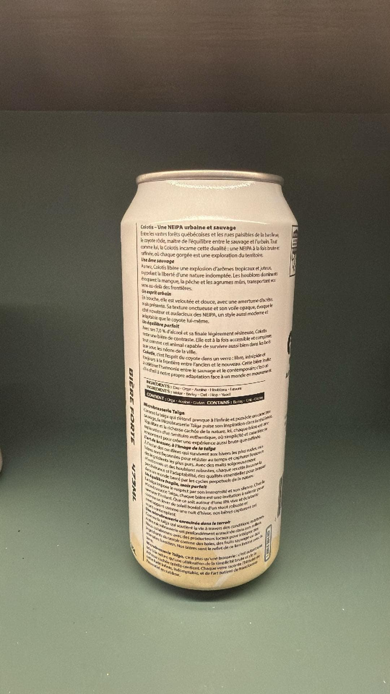
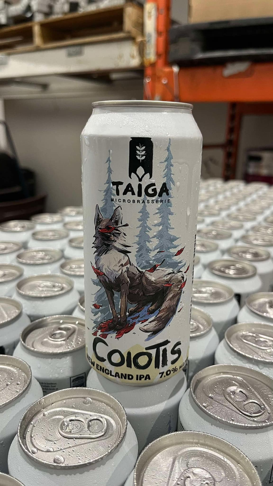
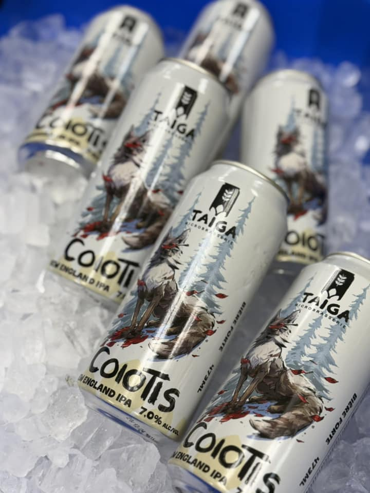
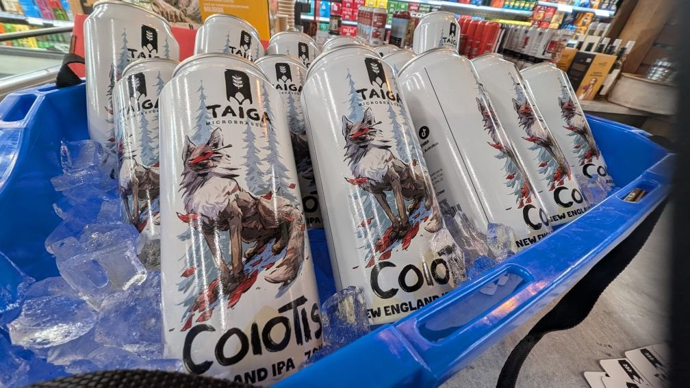
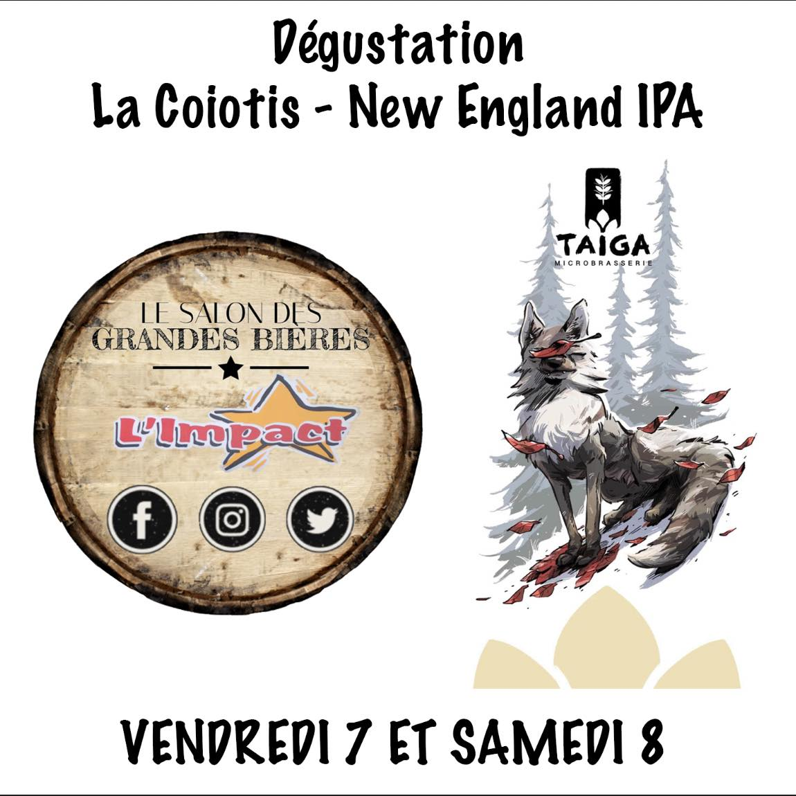
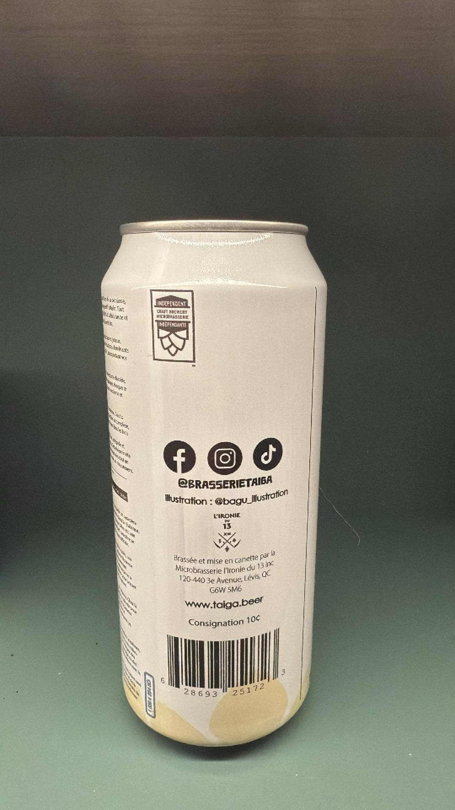
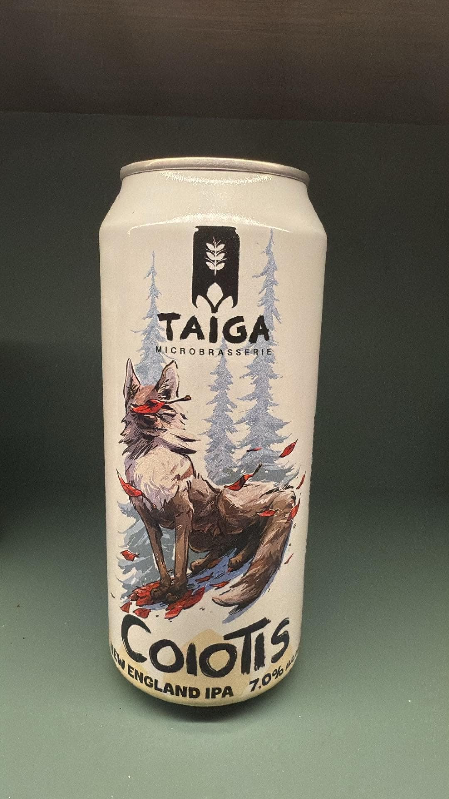

Alimentation Escompte L'Impact
Dépanneur bières micro · Limoilou
Microbrasserie indépendante · Québec
Taïga, c'est l'histoire d'une bière qui refuse de choisir entre le calme des grandes forêts et le grouillement de la ville. Une NEIPA urbaine et sauvage, brassée fièrement dans la région de Québec — pour la gang qui a du houblon dans le cœur.

Brassée au QuébecL'histoire
Taïga, c'est ces vastes forêts québécoises qui s'étendent presque à l'infini — et puis c'est la ville, son énergie, sa créativité. Notre microbrasserie puise son inspiration dans les deux territoires : chaque bière est ancrée dans la nature, chaque recette dans l'audace.
On brasse à Québec depuis 2024, avec une obsession claire : faire des bières qui ont une âme. Pas du marketing en canette. De vrais houblons, du vrai grain, des recettes pensées comme des cycles forestiers — solides, robustes, adaptables. Et une équipe engagée pour l'environnement, les producteurs locaux et notre monde.
Notre première bière
Entre les vastes forêts québécoises et les rues paisibles des banlieues, le coyote rôde, maître de l'équilibre entre le sauvage et l'urbain. Tout comme lui, la Coiotis incarne cette dualité : une NEIPA à la fois brute et raffinée, où chaque gorgée est une exploration du territoire.
New England IPA · 7,0% alc./vol. · 473 ml
Pulpeuse, la Coiotis libère une explosion d'arômes tropicaux et juteux, comme la liberté d'une nature indomptée. Les houblons dominants évoquent la mangue, la pêche et les agrumes mûrs — un voyage sans frontières.
En bouche, elle est veloutée et douce, avec une amertume discrète, mais présente. Sa texture onctueuse et son voile opaque évoquent ce côté rondeur et audace des NEIPA — un style moderne, accessible, adaptable.
À 7,0% d'alcool et à la finale légèrement résineuse, la Coiotis est une bière de contraste. À la fois accessible et complexe — comme cet animal capable de survivre aussi bien dans la forêt que sur les hauteurs de la ville.
Ouverture prochaine
Après plus d'un an de travail, on est à quelques détails près de vous accueillir au cœur du vieux Cap-Rouge. Un pub à l'image de notre gang : un milieu vivant, des projets qui bougent, une équipe passionnée de bière, de bouffe et de service. Un endroit où on vient chercher plus qu'une pinte — on vient chercher du vrai.
Coiotis fraîchement coulée, plus les bières saisonnières brassées en petits lots à découvrir en exclusivité au pub.
Des producteurs locaux dans l'assiette, un menu qui change avec les saisons, et une équipe qui sait pourquoi elle cuisine.
Vieux Cap-Rouge, à deux pas du célèbre tracel ferroviaire — un lieu qui rapproche, dans un secteur qui a une âme.
On recrute en ce moment — service, cuisine, bière. Écris-nous à info@pubdutracel.com pour rejoindre la gang.
Galerie
Quelques moments de notre première année — la canette, les premiers points de vente, les dégustations. Photos issues de la page Facebook officielle @brasserietaiga.






Où trouver la Coiotis
La Coiotis se retrouve principalement dans les dépanneurs spécialisés et épiceries fines de la grande région de Québec, plus quelques avant-postes à Lévis et Montréal. Liste mise à jour régulièrement.
Dépanneur bières micro · Limoilou
Boutique spécialisée bière artisanale
Haute-Beauport · Sélection micro
Succursale Sainte-Foy / Cap-Rouge
Saint-Romuald · Bières microbrassées
Bières & vins · Charlesbourg
Bières microbrasserie · Sainte-Foy
Lévis · Sélection locale
Plateau Mont-Royal · Avant-poste
Charny · Boucherie & bières
Saint-Jean-Chrysostome
Saint-Henri-de-Lévis
Lévis · Là où Taïga est brassée et mise en canette
Au restaurant
La Coiotis à la pression dans une institution de Québec — un classique pour accompagner un Victor signature.
Tu veux servir la Coiotis dans ton commerce ou ton restaurant ? Écris-nous — on est en train de bâtir notre réseau de la région de Québec et au-delà.
La gang qui nous suit
Quelques mots reçus depuis notre lancement — sur le terrain, en dégustation, dans les dépanneurs spécialisés.
« Une vraie belle découverte en 2025 — la Coiotis est juteuse comme il faut, sans tomber dans le sucré. Une NEIPA bien équilibrée, je la cherche dans tous les dépanneurs. »
« On les a goûtées au Salon des Grandes Bières — la gang derrière Taïga a quelque chose. Hâte de voir leur pub à Cap-Rouge ouvrir. »
« Le design de la canette, l'histoire, la bière — tout se tient. C'est rare qu'une nouvelle micro arrive avec une identité aussi claire dès la première sortie. »
Questions fréquentes
Les questions qu'on reçoit le plus souvent — la bière, le pub, où nous trouver.
La Coiotis est brassée et mise en canette par la Microbrasserie l'Ironie du 13 à Lévis (120-440 3e Avenue, Lévis QC G6W 5M6). On travaille présentement à monter notre propre brasserie au Pub du Tracel — d'ici-là, Ironie du 13 est notre partenaire de production.
Une New England IPA — un style d'IPA plus juteux et moins amer que les West Coast classiques. Texture onctueuse, voile opaque, gros arômes tropicaux. La Coiotis joue dans cette catégorie à 7%, avec un équilibre plus accessible que les NEIPA hyper sucrées du marché.
On est à quelques détails près. Vieux Cap-Rouge, secteur historique de Québec, au pied du Tracel ferroviaire. Inscris-toi à notre Facebook pour être averti — et si tu veux faire partie de la gang, on recrute service et cuisine : info@pubdutracel.com.
Oui — la Coiotis est notre première bière commerciale, lancée début 2025. D'autres recettes sont en développement pour le Pub du Tracel et la distribution. Suivez la page Facebook pour les annonces de sorties saisonnières.
Demande à ton dépanneur préféré de nous contacter directement — on est en pleine croissance et on cherche à étendre notre réseau. Écris à info@pubdutracel.com avec le nom de l'établissement et on prend contact.
Oui — certifiés « Independent Craft Brewery ». Aucun grand groupe derrière nous, juste une jeune entreprise engagée pour l'environnement, les producteurs locaux et la région de Québec.
Contact
On est joignable par courriel et sur nos réseaux. Pour le Pub du Tracel (candidatures, partenariats, ouverture), c'est aussi info@pubdutracel.com.
Statut mis à jour régulièrement. Pour les sorties spéciales et événements, suivre Facebook.